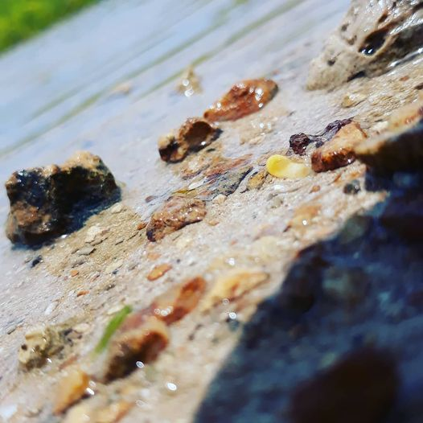
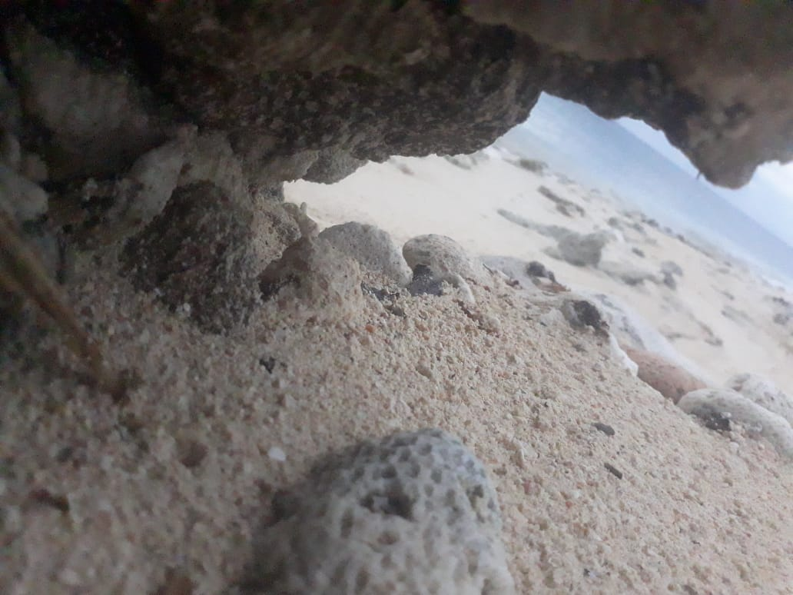
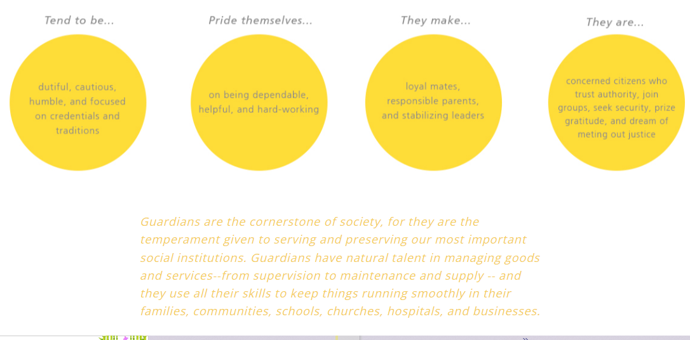

Hello and welcome to my personal webpage, where I will tell you a little bit about myself. |
|
Jump to the top Jump to Introduction Jump to Motto Jump to Characteristics Jump to the bottom |
IntroductionSo let start off by introducing myself. My name is Shanaldo Carty and welcome to my personal website. This is the second webpage of six(6) where i will go through and talk about my self. I am a 20-year-old student of the University of Technology jamaica. I was born in Mandeville, Jamaica, and grew up in Clarendon, Jamaica. I am just starting out as a Web Developer, but I am passionate about coding and problem solving. I love to work on projects with a team, but I am also very independent and thrive when working on my own. I am always interested in learning new technologies and expanding my skillset. I also enjoy writing short stories, playing video games, photographing nature, and playing football, among other things.MottoMy mentor taught me that the most important thing in life is to be happy. she said that we should never forget to enjoy life and to be grateful for everything we have. My mentor is my mother. She has always been there for me, no matter what. She is the strongest person I know. I live by this motto every day, and it's helped me through some tough times.CharacteristicsI have many characteristics. Some of them are really cool, while others aren't so much. I enjoy doing a variety of activities, but I'm not sure if I'm particularly skilled at any of them. I also enjoy spending time with my family and friends, and I am deeply committed to assisting others. I am most times play full too, but I have confidence in everything I do. I frequently receive feedback from others regarding my self-control and patience. Below i have created table with a few of my likes and dislikes.

  To determine my personality i took a personality test from the website http://www.Keirsey.com Below is the result i got back:After taking the test, I received my results, which indicated that I am a Guardian. I went to my profile to better understand what is meant, and I believe it is correct based on the results. Everything, I believe, applies to me.  |